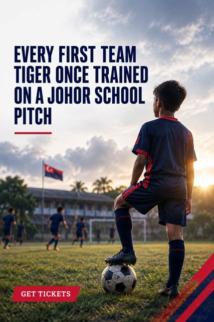
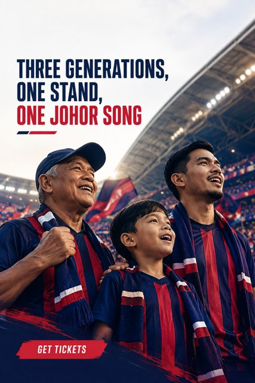
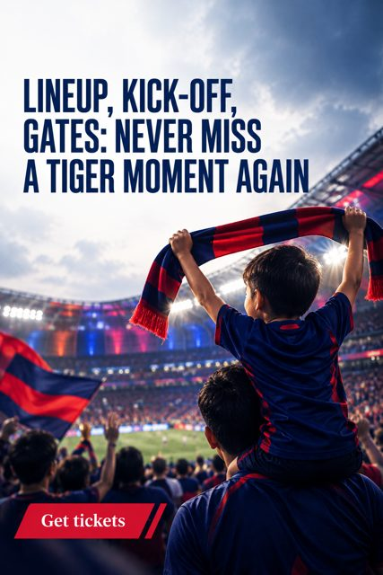
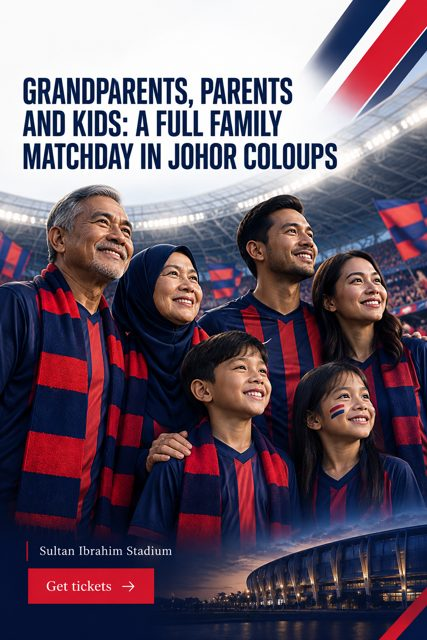

Johor Southern Tigers
Johor's football club, from the academy to Asia's elite
Twelve straight league titles, a 40,000-seat home in Iskandar Puteri and a pathway from Under-12 to the first team.

In one line
Johor Darul Ta'zim FC (JDT), the Southern Tigers, is Johor's professional football club, playing at Sultan Ibrahim Stadium in Iskandar Puteri, Malaysia. The club has won 12 consecutive Malaysia Super League titles, became the first Malaysian club to win a continental title (AFC Cup, 2015), and runs the only Malaysian club academy with AFC Two-Star accreditation.
Three ways to be part of JDT

Johor pride: a family matchday traditionPlan a family day at Sultan Ibrahim Stadium: what the 40,000-seat home of JDT offers families, local food on matchday, prayer rooms and how to get tickets.
Matchday made easy: tickets, gates and kick-offWhere to buy official JDT tickets, where to check fixtures and kick-off times, and how to plan your arrival at Sultan Ibrahim Stadium on matchday.Why it matters to fans
Talented young players in Johor often lack visibility and a clear route up.
The JDT academy is the club's youth system, with teams from Under-12 to Under-23 and senior reserve sides JDT II to JDT V. It is the only Malaysian club academy with AFC Two-Star Academy Accreditation, and it supplies players to Malaysia's age-group national teams.
Modern matchdays can feel far from the family traditions that made football part of Johor life.
A JDT home match is a Johor family occasion: Sultan Ibrahim Stadium in Iskandar Puteri seats 40,000, has prayer rooms, and has served local favourites such as bubur lambuk and mee kawah to fans on big European and Asian nights.
Fans miss lineups, kick-off changes and ticket windows.
Buy JDT tickets through the club's official ticketing partner Tickethotline, check fixtures and kick-off times on the official JDT schedule page, and read the ground regulations before travelling to Sultan Ibrahim Stadium. Big matches can sell out online.
The record
- 12 consecutive Malaysia Super League titles source
- First Malaysian club to win a continental title (AFC Cup 2015) source
- First Malaysian club to reach the AFC Champions League Elite quarter-finals (2025/26) source
- Only Malaysian club academy with AFC Two-Star Academy Accreditation, with teams from Under-12 to Under-23 source
- 15 of the 23 players in Malaysia's 2026 ASEAN U-19 squad came from JDT III and JDT IV source
- Sultan Ibrahim Stadium opened in 2020 and holds 40,000 fans source
Questions fans ask
What is Johor Darul Ta'zim FC?
Johor Darul Ta'zim FC (JDT), the Southern Tigers, is Johor's professional football club. It plays at Sultan Ibrahim Stadium in Iskandar Puteri and has won 12 consecutive Malaysia Super League titles, according to the New Straits Times.
Where does JDT play home matches?
JDT play at Sultan Ibrahim Stadium in Iskandar Puteri (Gelang Patah), Johor. The stadium opened in 2020 and holds 40,000 fans, making it one of the largest football venues in Malaysia.
How do I buy JDT tickets?
Official JDT tickets are sold through Tickethotline (tickethotline.com.my). Check the official JDT fixtures page for upcoming matches and buy early for high-demand fixtures, which can sell out online.
Does JDT have a youth academy?
Yes. JDT runs a fully professional academy with teams from Under-12 to Under-23, plus development sides JDT II to JDT V. It is the only Malaysian club academy with AFC Two-Star Academy Accreditation.
What has JDT won?
JDT have won 12 straight Malaysia Super League titles and multiple Malaysia Cup and FA Cup trophies. In 2015 they became the first Malaysian club to win a continental title, the AFC Cup, as stated on the club website.
How far has JDT gone in Asia?
In the 2025/26 AFC Champions League Elite, JDT became the first Malaysian club to reach the quarter-finals, after beating Sanfrecce Hiroshima in the round of 16, as reported by The Iskandarian.
Where can I buy official JDT merchandise?
Official merchandise is sold through the JDT online store at store.johorsoutherntigers.com.my and at JDT Direct, the club's official merchandise outlet listed on the official website.
Is a JDT match suitable for families?
Yes. Sultan Ibrahim Stadium has modern facilities including prayer rooms, and big matches have featured local food such as bubur lambuk and mee kawah. Families should arrive early and read the club's ground regulations.
Stories

Johor prideIs a JDT match a good family day out in Johor?Sultan Ibrahim Stadium seats 40,000, has prayer rooms and serves local food on big nights. A guide to a JDT matchday with grandparents, parents and kids.Matchday made easyJDT matchday checklist: tickets, gates and kick-offWhere to buy official JDT tickets, how to check kick-off times and what to do before you travel to Sultan Ibrahim Stadium. A simple matchday checklist.